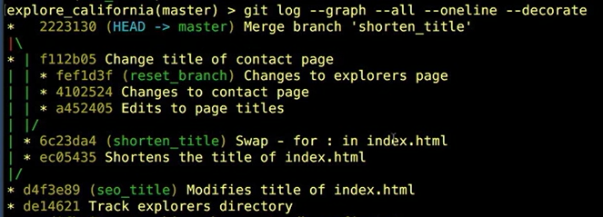

Git: Branches, Merges, and Remotes¶
Tree-ish¶
Git references¶
- SHA1 hash: the commit ID
- HEAD
- Branch
- Tag
- Ancestry
- Parents: abcd1234^, master^, HEAD^, HEAD~1, HEAD~
- Grandparent: abcd1234^^, master^^, HEAD^^, HEAD~2
-
Grat-Grandprarents: abcd1234^^^, master^^^, HEAD^^^, HEAD~3
git show HEAD^ git show HEAD^^ git show HEAD~3
Tree Listing¶
List of blobs (binary large object = file) and trees (tree = directory) of a tree
git ls-tree HEAD git ls-tree HEAD^ git ls-tree HEAD tree/
Filter the commit log after a commitID to HEAD
git log abcd1234.. git log abcd1234..HEAD git log <SHA>..<SHA>
Filter the commit log by file or directory
git log filename git log dirname
Branches¶
Create a new branch:
git branch branch_name
Note that new branch and its parent branch are the same at the moment. There are not differences because there were not commits yet.
List all branches. Currently checkout branch is shown in green color:
git branch
Switch branches
git checkout branch_name
Switch to a new branch
git checkout -b branch_name
Git rejects to switch with uncommited changes. The options are:
- commit the changes to the current branch
- remove the changes checking out the file
- stash the changes
Compare branches¶
git diff master..new_feature git diff --color-words <SHA>..<SHA>
As a general rule, the older branch should go firsts, so changes shown have occurred since that point in time.
Rename branches
git branch -m new_branch_name
Delete branches
git branch -d branch_name
Cannot delete the checked out branch
Cannot delete branches not fully merged. Instead, use capital -D, but commits in the branch will be lost.
Reset Branches¶
Back up the latest commitID before, in case you want to undo the reset execution
-
Soft reset: Latest commits changes are staged and pending to commit. Useful when you want to back things up in the commit timeline.
git reset --soft <SHA> -
Mixed reset (default reset option): Latest commits changes are unstaged, pending to stage and commit.
git reset --mixed <SHA> git reset <SHA>
-
Hard reset: Latest commits changes are nowhere. Useful to permanently undo commits (SHA=commitID) or if you want to make one branch look like another (sha=branchID)
git reset --hard <SHA>Create a new branch as backup before a hard reset
Merge Branches¶
The merge concept is like a commit to the checked out branch from another branch. Run a merge with a clean working directory:
git merge <branch_name>
Find out which other branches already have merged all their commits into this branch
git branch --merged
Find out which other branches have NOT merged their commits into this branch yet
git branch --no-merged
Use git log --graph --all --oneline --decorated to check how branches were merged

A conflict occurs when two different commits have changes in the same line or set of lines. Solutions:
- Abort merge
git merge --abort - Resolve the conflict manually
git show --color-words git commit
- Use the merge tool
git mergetool - Use a graphical user interface tool, like visual studio
To reduce conflicts:
- Keep lines short
- Keep commmits small and focused
- Beware edits to whitespace (spaces, tabs, line return)
- Merge to master often
- Merge from master (tracking)
Stash Changes¶
Create and view stash:
git stash save "stash_name" git stash list git stash show stash@{0} git stash show -p stash@{0}
Apply stash changes to the workgin directory, removing the single stash:
git stash pop git stash pop stash@{0}
Apply stash changes to the workgin directory, keeping the single stash:
git stash apply git stash apply stash@{0}
Delete stash (stash that was not deleted using apply)
git stash drop stash@{0} git stash clear
???
git stash -u git stash --include-untracked
Colaborate remotely¶
git commit -m "from-my-computer"

git push git push origin master

If you try to do a push and Git rejects it, then you need to fetch, merge, and then push again.
git commit -m "from-remote-server"
git fetch
git fetch does not change the local branch.
- fetch before you start to work everyday
- fetch before you push
- fetch before you go offline
- fetch often
- git fetch + git merge =
git pull
git merge

Remote repositories¶
Add a remote repository
echo "# repository_name" >> README.md git init git add README.md git commit -m "first commit" git remote add origin git@github.com:rnietoe/repository_name.git git push -u origin master
List remote repositories
git remote git remote -v
cat .git/config
Remote branches¶
Add a remote branch
git push -u origin master
List remote and all branches
git branch -r git branch -a

Delete remote branches
git push origin :branch_name git push origin --delete branch_name
Tracking/Untraking remote branch¶
git branch branch_name origin/branch_name git checkout -b branch_name origin/branch_name
git branch -u origin/branch_name branch_name git branch --unset-upstream branch_name
Push workflow¶
git checkout master git fetch git merge origin/master git merge local_branch git push
Next steps¶
Git Aliases for commonly-used commands¶
Add alias "st = status" to ~/.gitconfig
git config --global alias.st "status"
Other examples:
- st = status
- co = checkout
- ci = commit
- br = branch
- df = diff
- dfs = diff -stagged
- logg = log --graph --decorate --oneline --all
Set up SSH keys for remote login¶
Authenticating with GitHub from Git
Integrated Development Environments (IDEs)¶
Integrate source code editing with Git features
Graphical User Interfaces (GUIs)¶
They have a point-and-click interface for performing Git actions.